Every site-map screen appears below. A1 interpretation, A2 speech input and A3 spoken output each include the five required AI/service states. These are grayscale design diagrams. Proposed controls are not claimed as existing game behavior.
W01: Title
Initial / saved voyage - F1 - Current
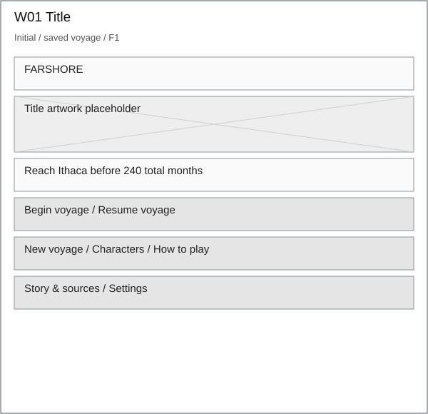
Resume appears when a valid save exists. New voyage opens S12 before overwriting progress. Primary action stays easy to find.
Download editable SVGW02: Story introduction
Reading / skip - F1 - Current
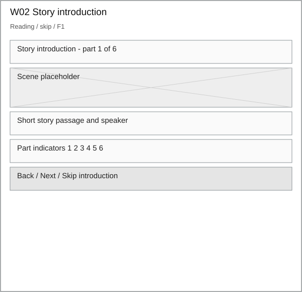
Keyboard next/back and skip lead to S03. Replaying the introduction preserves the voyage.
Download editable SVGW03: Encounter / A1
A1-INITIAL - F2 - Current
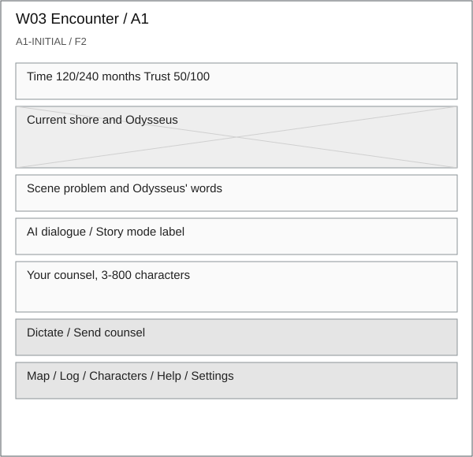
Empty input includes an example, character count and keyboard shortcut. Invalid input stays inline and never calls the model.
Download editable SVGW04: Encounter / A1
A1-LOADING - F2 - Proposed improvement
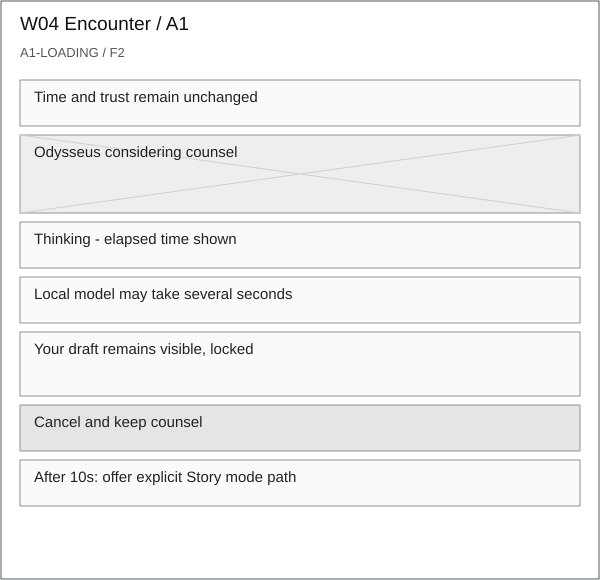
Current UI has Thinking and a brief message. Proposed elapsed time and cancel address measured waits. Discard late replies by request ID.
Download editable SVGW05: Encounter / A1
A1-SUCCESS - F2/F5 - Proposed review checkpoint
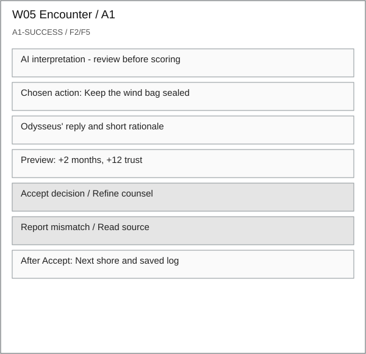
Current app commits immediately. Proposed review presents one unscored candidate. Only Accept applies score once. Sources support story context, not model certainty.
Download editable SVGW06: Encounter / A1
A1-UNCERTAIN - F2/F4 - Proposed
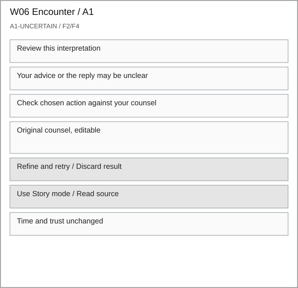
User-reported mismatch or ambiguous counsel triggers this state. No fabricated confidence percentage. No proven automatic semantic detector is claimed.
Download editable SVGW07: Encounter / A1
A1-ERROR - F4 - Current recovery + proposed cancel
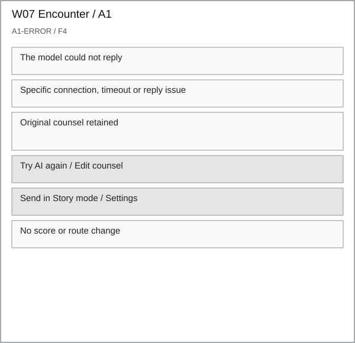
Distinguish transport failure from poor meaning. Story mode requires a deliberate choice and remains labeled scripted.
Download editable SVGW08: Journey report
Win / time limit - F5 - Current
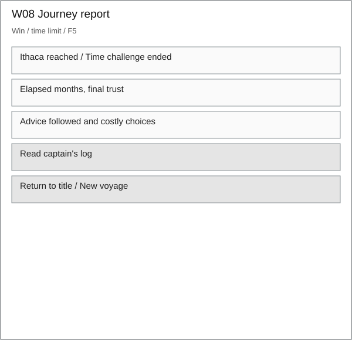
The report derives from accepted turns. At 240 months the time challenge ends. New voyage requires S12 confirmation.
Download editable SVGW09: Pause overlay
Open - F1/F5 - Current
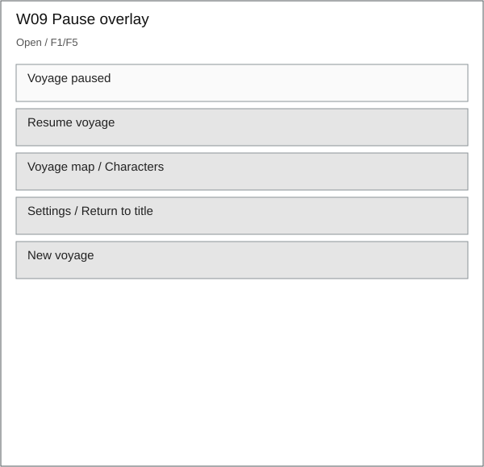
Close returns focus to Pause. Proposed pending-turn rule requires explicit cancel or waiting before navigation.
Download editable SVGW10: Characters overlay
Selected character - F1/F5 - Current
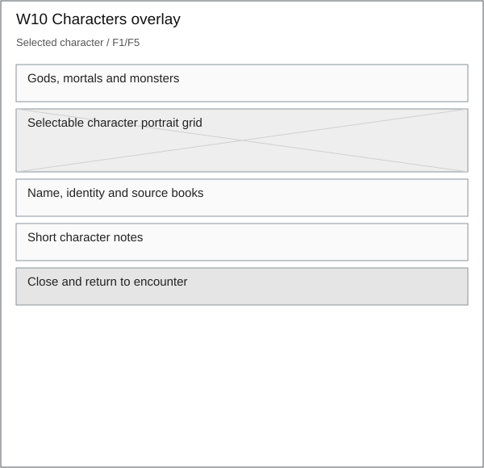
Character content is authored. Selection works with keyboard and touch. No model-generated biography.
Download editable SVGW11: Voyage map overlay
Selected shore - F5 - Current
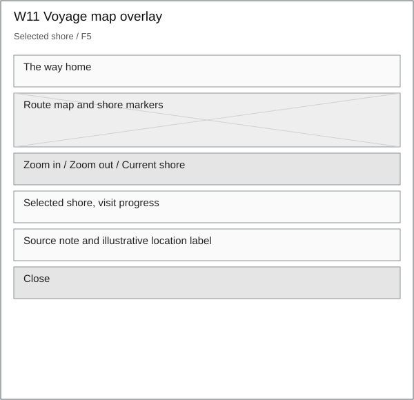
Show the actual saved branch. Mark legendary locations as illustrative. Selection is independent of game progression.
Download editable SVGW12: Captain's log overlay
Entries / empty - F5 - Current + proposed practice undo
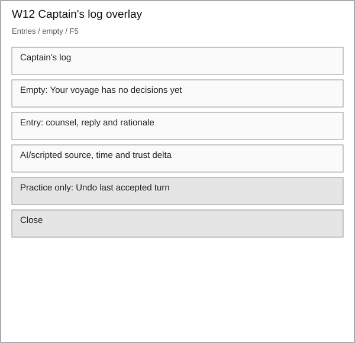
Current log is read-only. Proposed undo is practice-only and restores the full prior route and save, including branch changes.
Download editable SVGW13: How to play overlay
Open - F1 - Current
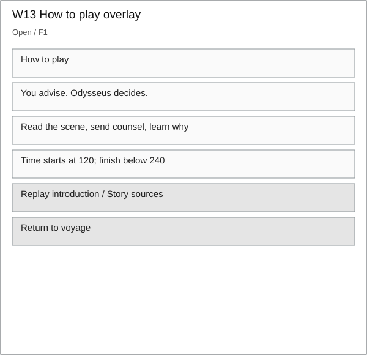
Explain that refusal is part of the story. It should remain distinguishable from a contradictory AI interpretation.
Download editable SVGW14: Story and sources overlay
Open - F5 - Current
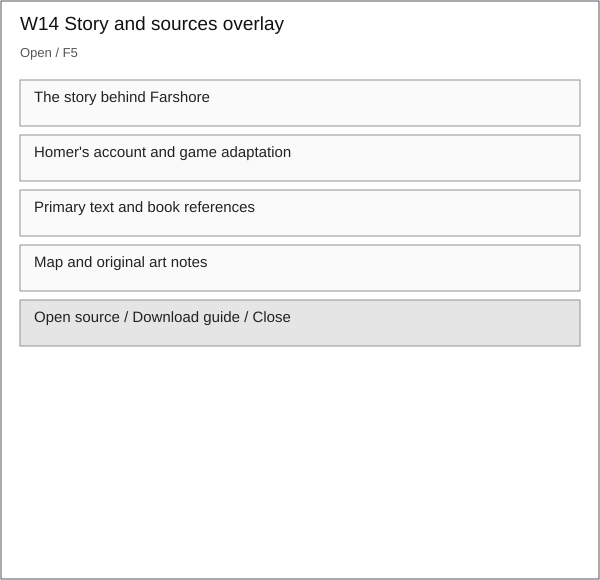
External links open only on user action. Do not present game penalties or alternate events as Homer's account.
Download editable SVGW15: Settings overlay
Available / disconnected - F1/F4 - Current
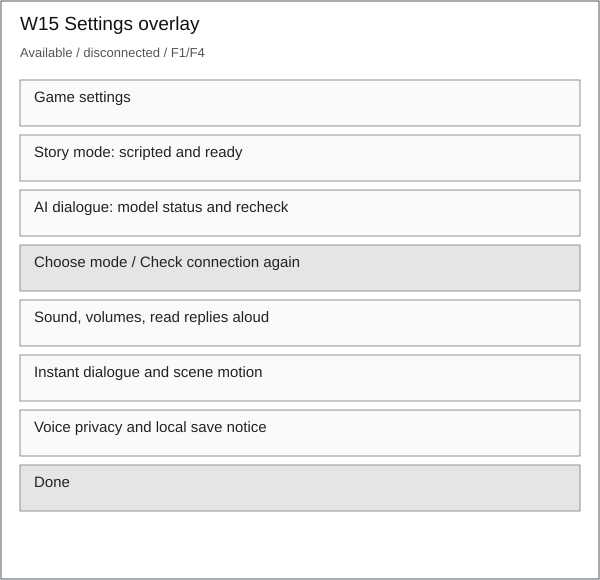
Connection status checks the catalog without generating text. AI mode is disabled when unavailable. Typing and Story mode remain accessible.
Download editable SVGW16: New voyage confirmation
Pending confirmation - F1/F5 - Current
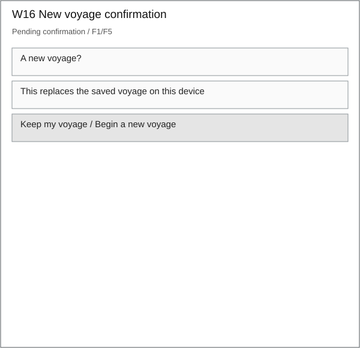
Name the local save consequence before the action. Cancel preserves everything. Practice mode is a separate proposed setting.
Download editable SVGW17: Speech input / A2
A2-INITIAL - F3 - Current
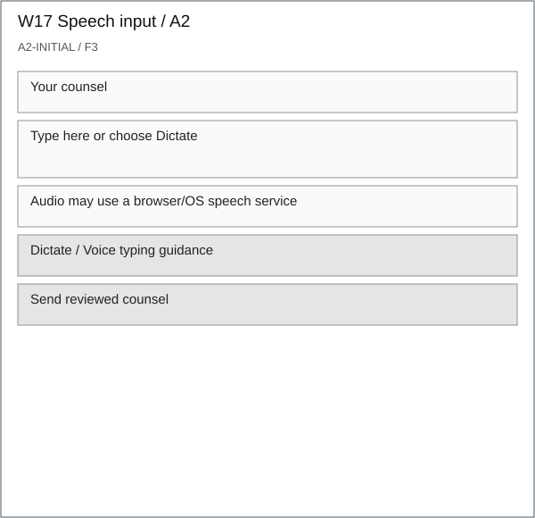
Offer typing immediately. Windows + H guidance does not claim the website can open the OS panel.
Download editable SVGW18: Speech input / A2
A2-LOADING - F3 - Current
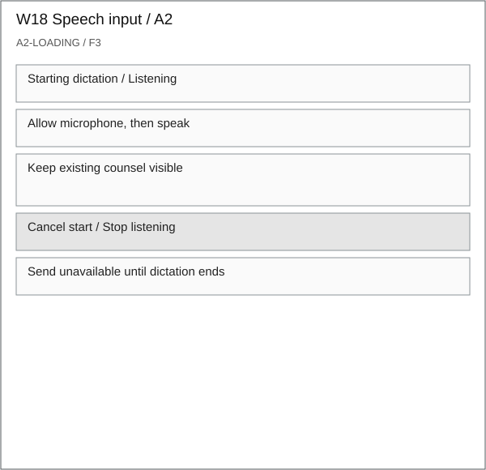
Actual transcript timing is unmeasured. Use live service events and existing start/listening deadlines, with no invented percent progress.
Download editable SVGW19: Speech input / A2
A2-SUCCESS - F3 - Current
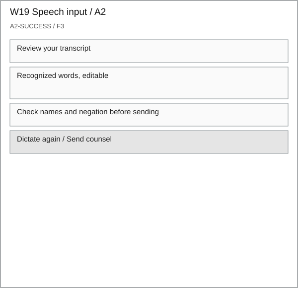
Speech input never triggers an automatic game turn. Edits feed the same text path as typing.
Download editable SVGW20: Speech input / A2
A2-UNCERTAIN - F3 - Proposed
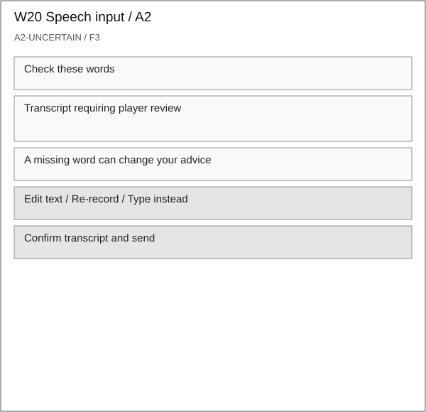
Use a player correction or unsupported/unusable transcript as the signal. Browser confidence values are not established for this setup.
Download editable SVGW21: Speech input / A2
A2-ERROR - F3 - Current
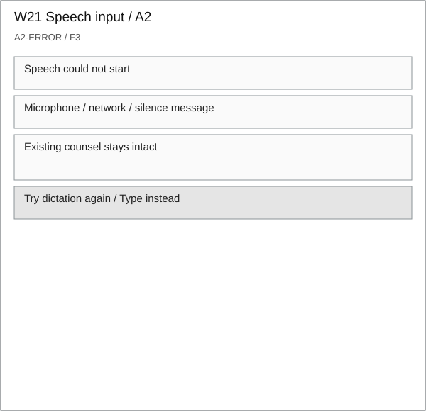
Name permission failure separately from no speech and network failure. No score change and no model call.
Download editable SVGW22: Spoken reply / A3
A3-INITIAL - F2/F5 - Current
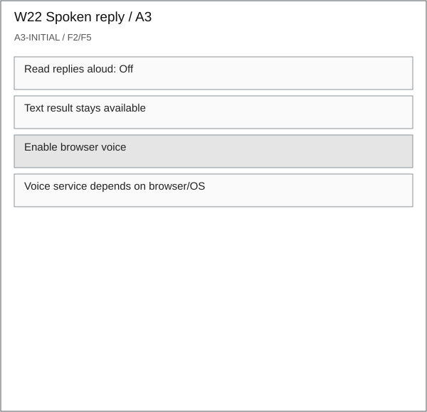
Opt-in speech and text remain separate. The voice feature does not analyze the player's emotions.
Download editable SVGW23: Spoken reply / A3
A3-LOADING - F2/F5 - Proposed
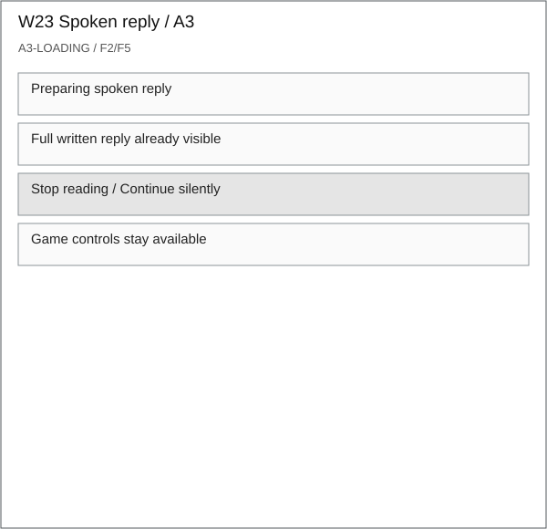
Voice loading never blocks the score result or text navigation. Cancel playback if the user advances.
Download editable SVGW24: Spoken reply / A3
A3-SUCCESS - F2/F5 - Current + proposed replay controls
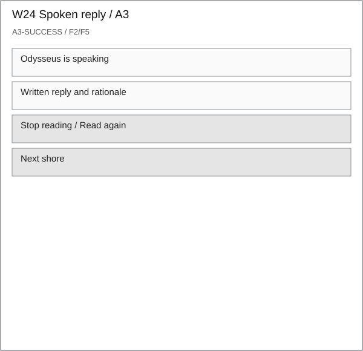
Current speech plays the result. Visible stop/replay controls are proposed. Reduce background music while speech plays.
Download editable SVGW25: Spoken reply / A3
A3-UNCERTAIN - F2/F5 - Proposed
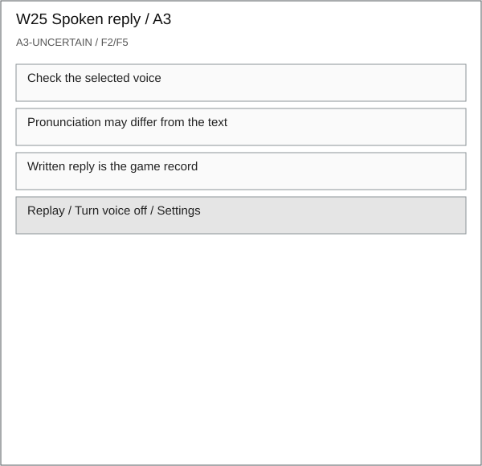
This is a voice-quality review state, not an LLM confidence score. Audio never changes the underlying decision.
Download editable SVGW26: Spoken reply / A3
A3-ERROR - F2/F5 - Proposed
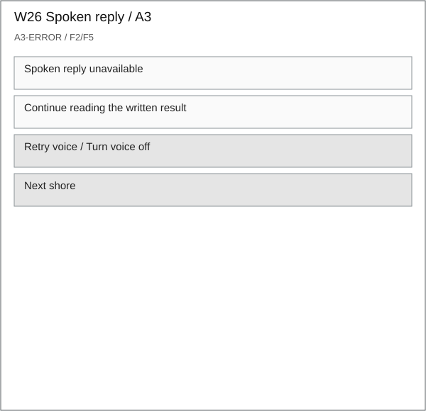
Current playback errors clear the speaking flag. Proposed message provides visible recovery without regenerating the AI decision.
Download editable SVG